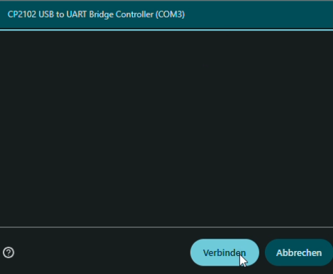

Blue Noise is a critical intervention and artistic exploration that takes the form of a Bluetooth jammer. It engages with the increasing tendency in modern society to isolate ourselves from the acoustic environment through wireless, ever-smaller headphones and audio devices.
https://simonweckert.com/bluenoise.html

How to Upload Your Code to the ESP Board
1. Connect the ESP device to your PC using a USB cable. Ensure the cable is a data cable and not just a charging cable.

2. Select the hardware checkbox and click Connect:
